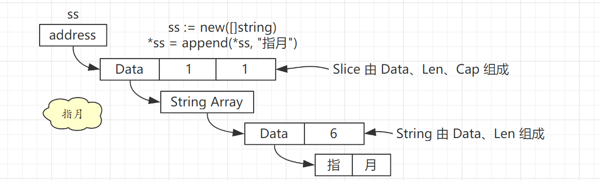
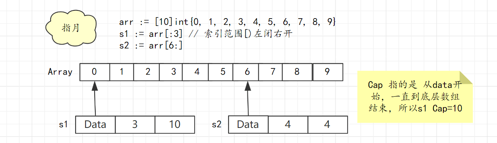

[Go] Golang Slice
temp
1 概述
Go 语言中的 Slice 具体实现如下：
1 | type SliceHeader struct { |
- Data：真实数据的地址
- Len：元素个数
- Cap：容量
Slice 的元素存在一段连续的内存中，实际上就是一个数组，Data 就是这个底层数组的起始地址。
具体结构如下：
1 | ss := new([]string) |
整个结构如下图：

ss 为一个指向 String Slice 的指针，Slice 的 Data 指向的是 String Array，String Array 每个元素都是一个 String，最后由 String 的 Data 指向最终的 字符串内容。
2 相关操作
2.1 初始化
var
1 | var ints []int |
这时只是定义了 Slice，初始化了 SliceHeader 这个结构，并没有分配内存开辟底层数组，所以 Data 字段为 nil，同样的 Len 和 Cap 则为0。
new 关键字
使用 new 关键字和之前直接定义是一样的，都不会初始化 Slice 的 3个字段，不过 new 关键字返回的是指针。
1 | ints:=new([]int) |
make 关键字
1 | var ints = make([]int, 4, 8) |
想这样，通过 make 关键字初始话化 Slice 时，可以指定 Len 和 Cap ，同时也会开辟一个长度为 Cap 的底层数组，同时该数组元素初始化为指定类型的零值。
这里就是 Len =4 Cap=8 Data 数组长度为8，元素皆为 Int 型的零值 0。
2.2 访问
已经存储的元素可以安全访问，超过这个范围则为越界访问，会发生 panic。
1 | var ints = make([]int, 4, 8) |
初始化时 Len=4，通过 ints[4] 访问第 5 个元素则为越界访问。
所以 Slice 访问边界实际由 Len 属性决定。
2.3 添加元素
需要注意的是，由于指定了Len=4，所以后续添加元素则会从第5个位置开始,例子如下：
1 | var ints = make([]int, 4, 8) |
2.4 删除元素
Slice 删除元素没有直接调用的方法，所以比较麻烦。
具体逻辑为：将待删除元素之前的元素和之后的元素拼接形成一个新的 Slice，这样待删除元素就算是删掉了。
1 | s1 := []int{1, 2, 3, 4, 5} |
3 底层数组
Slice 的 Data 字段指向的就是 Slice 的底层数组，但是没有限制只能从数组起始地址开始，可以从数组中任意元素开始。所以 Slice 的底层数组是可以共用的。例子如下：
1 | arr := [10]int{0, 1, 2, 3, 4, 5, 6, 7, 8, 9} |
具体结构图如下：

对 Slice 的更改实际都是在修改 底层数组。如果底层数组可以满足要求，则会修改底层数组，否则就会重新开辟一个底层数组。
比如这里对 s2 进行 append 操作就会开辟新数组，因为这个数组已经满了。
正是因为有开辟新数组的可能，所以每次 append 的结果都需要用一个变量来接收，因为可能 append 后返回的不在是以前那个 Slice 了。
例子如下：
1 | func SliceArray() { |
可以看到对 s2 append 后返回的新切片 s3 ，底层开辟了新数组，所以已经和 s1、s2 没关系了、
4 扩容
Slice 扩容分为 4 个步骤，例子如下
s1 cap 为 2，所以 append 时必定会触发扩容。
1 | s1 := []int{1, 2} |
STEP1：预估容量
- 1）如果：oldCap * 2 < targetCap，newCap —> targetCap，如果旧容量翻倍也不满足所需目标容量，则新容量就是目标所需容量。
- 2）否则：
- 1）oldLen < 1024 , newCap = oldCap * 2, 如果扩容前元素个数小于 1024，那么新容量直接翻倍。
- 2）oldLen > 1024 ,newCap = oldCap * 1.25, 如果扩容前元素个数大于 1024，那么新容量则翻 1.25 倍。
所以 s1 预估容量为 7，走的是第一条逻辑。
STEP2：预估容量需要多大内存
预估容量确定的是元素个数，newCap 个元素需要占用多大内存呢？这就和元素类型挂钩了。
所需内存 = 预估容量 * 元素类型大小
s1 所需内容 = 7 * 8 = 56 字节
STEP3：匹配合适内存规则
step2 中确定了所需内存大小，但是 Go 语言的内存分配模块只提供固定规格的内存,比如 8 16 32 48 64 80 96 112 …这样的规格。对于所有内存申请都会分配一个满足要求且浪费最少的内存规则。
所以 s1 扩容申请 56 字节会得到一个 64 字节的空间。
步骤四：确定最终容量
最终容量 = 分配内存 / 元素类型大小
step3 中分配了一个 64 字节的内存，int64 每个元素占 8 字节，所以最终容量为 64 / 8 = 8。
5 与 String 互转
Slice 由 Data、Len、Cap 构成，String 由 Data、Len 构成，二者只相差了一个 Cap 属性。
通过 unsafe 包可以快速进行二者的转换。
1 | func String2Bytes(str string) []byte { |
Go 语言标准库中 strings.Builder 就使用到了 unsafe.Pointer 来提升效率。
1 | // strings/builder.go 47 行 |
6 .参考
https://draveness.me/golang/docs/part2-foundation/ch03-datastructure/golang-array-and-slice/
https://blog.golang.org/slices-intro